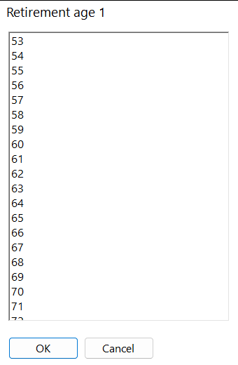

Getting started
Open the planner from the Financial Plan tab of CashTank Budget. Every CashTank project has its own plan, saved with the project.
The planner window

- Plan Settings - the pages you fill in for your plan: Tax Payers, Income and Expenses, Investments, Optimizer and Plan Results.
- Other Settings - reference tables that come filled in with 2026 values: Income Brackets, Medicare Brackets, RMD Table, Asset Classes and General Settings. You rarely need to change them.
- Actions - Run Plan calculates the plan and fills in Plan Results.
Build your first plan
- Describe the tax payers. On Tax Payers, enter a name, year of birth and life expectancy for yourself, and add a spouse or partner if you file jointly. Enter up to three retirement ages and three Social Security claim ages you want to compare.
- Enter Social Security estimates. Copy your monthly benefit at 62, at full retirement age and at 70 from your Social Security statement (my Social Security at ssa.gov).
- Add your accounts and investments. On Investments, add each bank or brokerage, its accounts (Savings, Brokerage, IRA, 401(k), Roth...) and the investments in each account with today's balance. Give every investment an asset class.
- Add your income. On Income and Expenses, add wages and pensions and the account each one is paid into. Social Security and RMDs are added for you.
- Add your expenses. Add your yearly living expenses in today's dollars. Leave From as Auto to let the planner pay them from your accounts in a sensible order. Taxes and Medicare are added for you.
- Check the settings. On General Settings, review inflation and the Social Security adjustment factor. Replace the placeholder state tax in Income Brackets with your state's rates.
- Run the plan. Click Run Plan. It uses each tax payer's first retirement age and first claim age, no Roth conversions and a normal market.
- Read the results. Plan Results shows every year's cash flows, account balances, income and expenses, net asset value and tax forms.
- Optimize. On Optimizer, run every combination of your ages and Roth buckets in both markets and compare the scenarios.
Saving your plan
The plan is part of your CashTank project. Any change - typing in a box, picking a value, adding or deleting a row - turns on the main window's Save button. Save the project as usual; if you close CashTank with unsaved changes, it asks whether to save them.
- File > New starts a new plan with one tax payer and the 2026 reference tables.
- Opening a project loads its plan. Older projects without a plan start with a new one.
- Plan results are saved too, so you can reopen a project and read them without running the plan again.
Amounts are in today's dollars
Enter every amount (wages, pensions, expenses, Social Security estimates) as it is today. The planner raises each amount every year by its inflation rate. Results show the actual dollars of each year, so a $60,000 expense grows to about $141,394 in plan year 30 at 3% inflation. See inflation.
Picking ages and years
Boxes for ages and years are filled in with a picker: click the button at the right of the box.

- Age picker - ages 20 to 100, for life expectancy, retirement ages and Social Security ages.
- Year picker - years 1900 to 2100, for the year of birth.
- Start / end year picker - for income and expenses: a plan milestone such as "retirement" or a calendar year. See plan milestones.